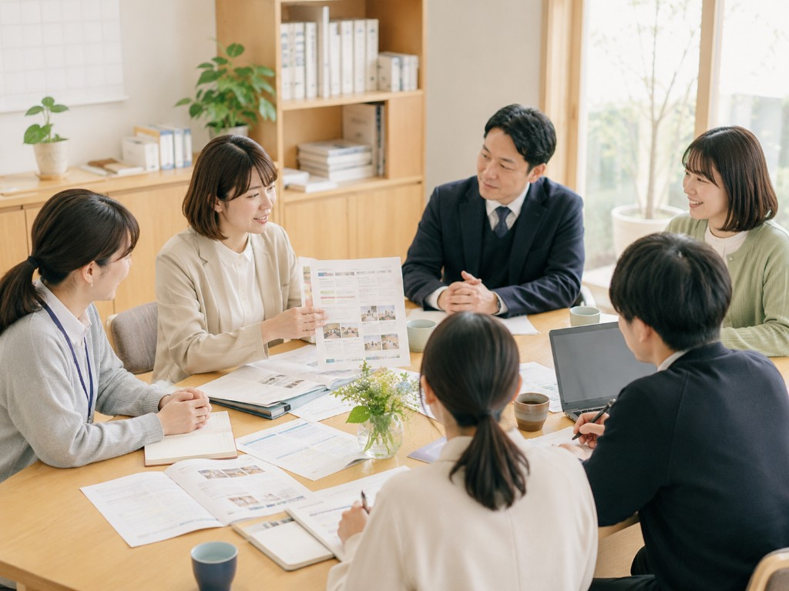

ACTIVITY 01
つどい・交流会
病気・障害の家族を持つ子ども若者や、以前そうだった方が集まり、同じ経験をもつ仲間と出会える場です。
話したくないときは聞くだけでも、ゲームや飲み物を楽しむだけでも大丈夫。参加方法を決めるのは、あなた自身です。
What we do
参加者向けの居場所づくりと、社会へ理解を広げる活動。その両方を大切にしています。
病気・障害の家族を持つ子ども若者や、以前そうだった方が集まり、同じ経験をもつ仲間と出会える場です。
話したくないときは聞くだけでも、ゲームや飲み物を楽しむだけでも大丈夫。参加方法を決めるのは、あなた自身です。

たこ焼きパーティー、創作体験、お出かけ、ゲーム大会など、「ケアする自分」から少し離れて楽しめる時間を企画します。
うまく話す必要も、悩みを説明する必要もありません。一緒に楽しむことから生まれるつながりを大切にします。

学校や地域に向けて、ヤングケアラー・若者ケアラーを知るための講演や学習会を行います。
当事者の経験と専門的な知見の両方を届け、身近な人の変化に気づき、適切につながれる地域を目指します。

学校・企業・行政・地域団体などへ、当事者経験者や大学教授、保健医療福祉の専門職を派遣します。
対象や目的に合わせて内容を調整します。研修、授業、職員向け勉強会などのご相談はお問い合わせください。